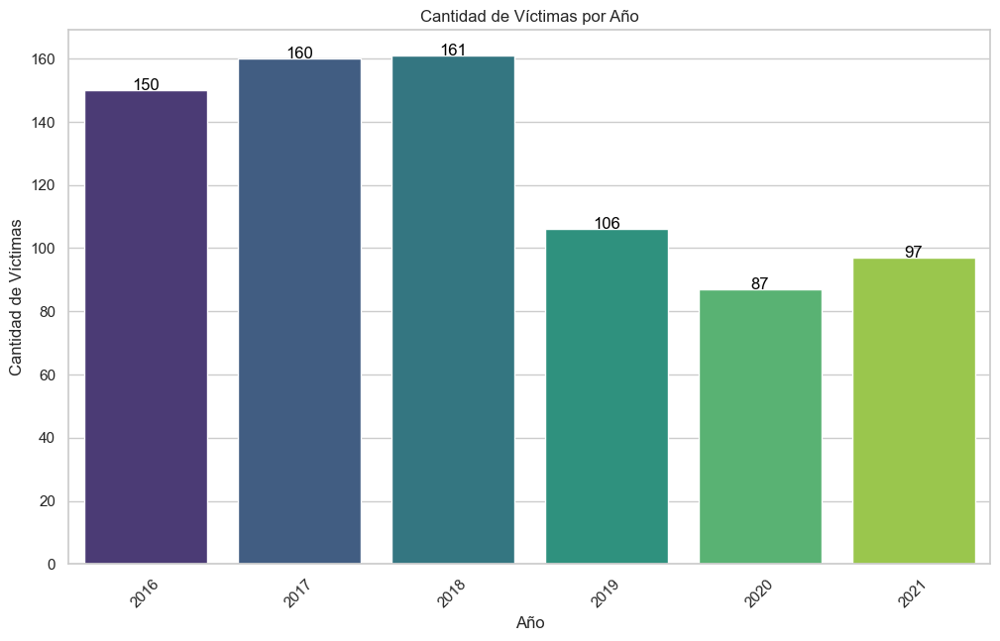
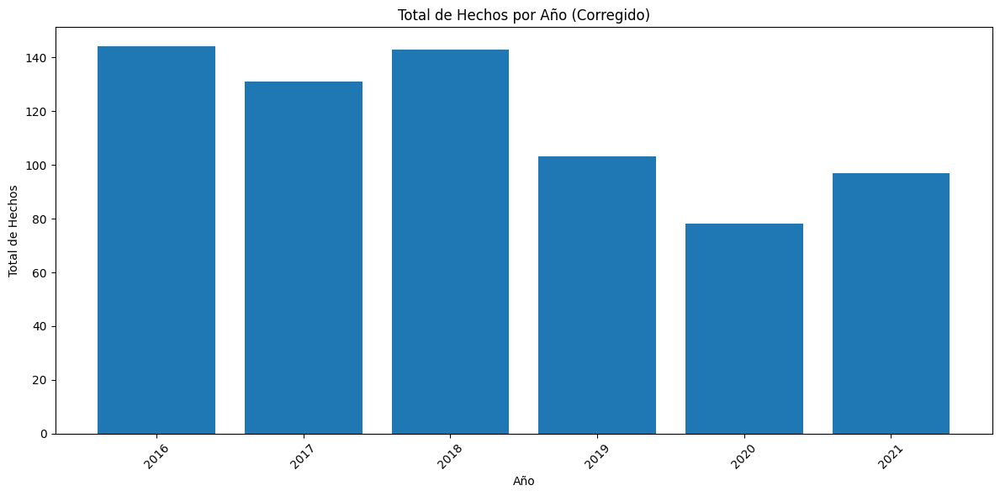
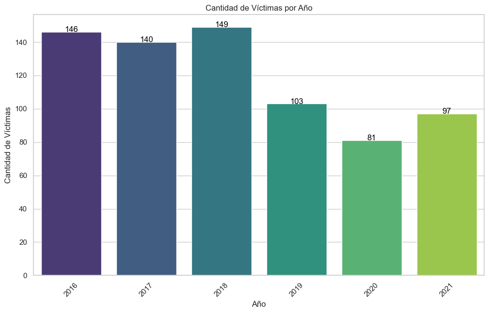
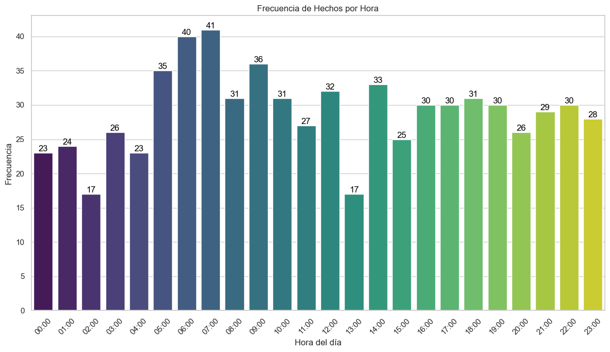
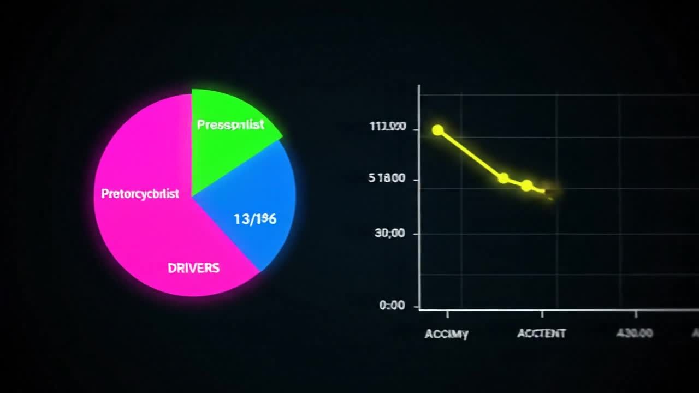
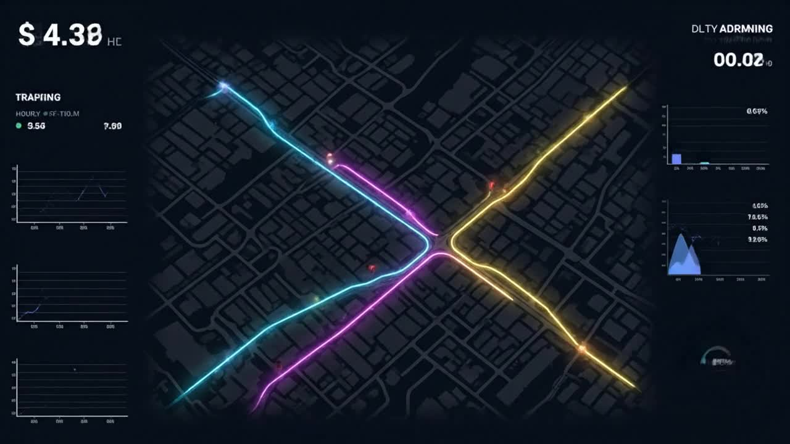
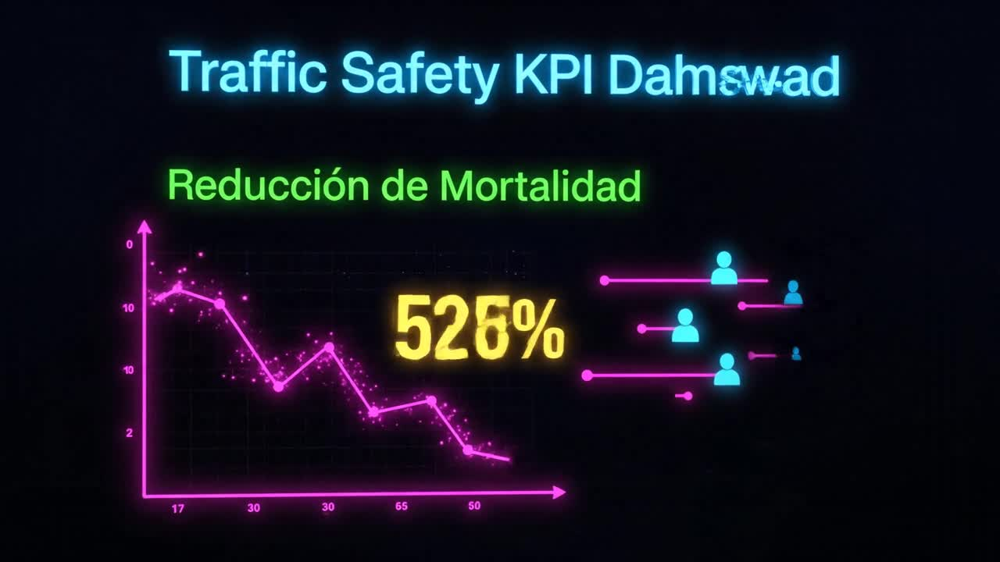

Galería de Visualizaciones - Análisis de Siniestros Viales
Visualizaciones Originales del Análisis
Estas visualizaciones fueron generadas durante el análisis exploratorio de datos (EDA) y muestran los hallazgos clave sobre los siniestros viales en CABA.

Distribución temporal de siniestros viales

Análisis por tipo de víctima

Distribución por comuna

Patrones horarios de siniestros

Distribución por día de semana

Análisis de género y edad de víctimas

Tendencia anual de siniestros

Mapa de calor de accidentes
Videos Animados
Estos videos animados ilustran los conceptos clave del análisis y las propuestas de valor para las Secretarías de Movilidad.
Portada Animada

Dashboard de Insights

Patrones Espaciotemporales
Modelo Predictivo

KPIs de Impacto